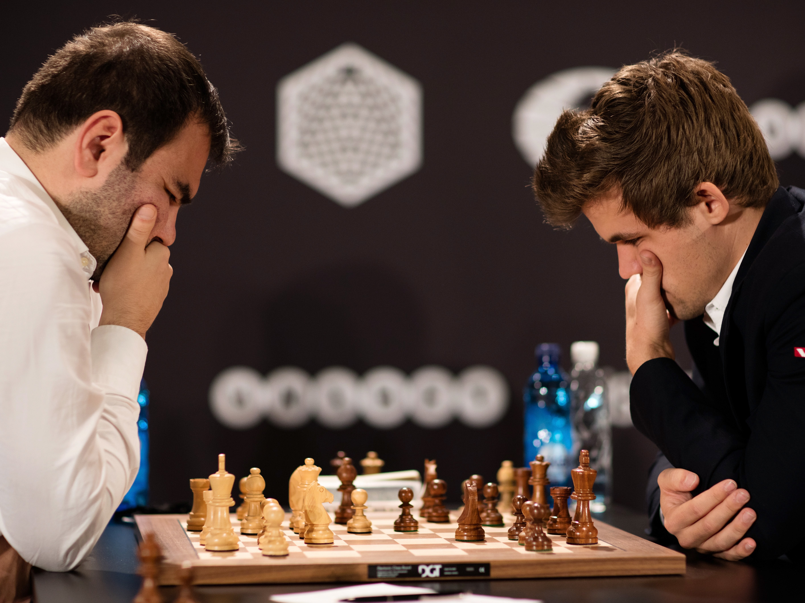

Cricket is a bat-and-ball game played between two teams of eleven players on a field at the centre of which is a 22-yard (20-metre) pitch with a wicket at each end, each comprising two bails balanced on three stumps. The batting side scores runs by striking the ball bowled at one of the wickets with the bat and then running between the wickets, while the bowling and fielding side tries to prevent this (by preventing the ball from leaving the field, and getting the ball to either wicket) and dismiss each batter (so they are "out"). Means of dismissal include being bowled, when the ball hits the stumps and dislodges the bails, and by the fielding side either catching the ball after it is hit by the bat, but before it hits the ground, or hitting a wicket with the ball before a batter can cross the crease in front of the wicket. When ten batters have been dismissed, the innings ends and the teams swap roles. The game is adjudicated by two umpires, aided by a third umpire and match referee in international matches. They communicate with two off-field scorers who record the match's statistical information.
Chess is a board game for two players, called White and Black, each controlling an army of chess pieces in their color, with the objective to checkmate the opponent's king. It is sometimes called international chess or Western chess to distinguish it from related games, such as xiangqi (Chinese chess) and shogi (Japanese chess). The recorded history of chess goes back at least to the emergence of a similar game, chaturanga, in seventh century India. The rules of chess as they are known today emerged in Europe at the end of the 15th century, with standardization and universal acceptance by the end of the 19th century. Today, chess is one of the world's most popular games, played by millions of people worldwide.
Strength training or resistance training involves the performance of physical exercises that are designed to improve strength and endurance. It is often associated with the lifting of weights. It can also incorporate a variety of training techniques such as bodyweight exercises, isometrics, and plyometrics.